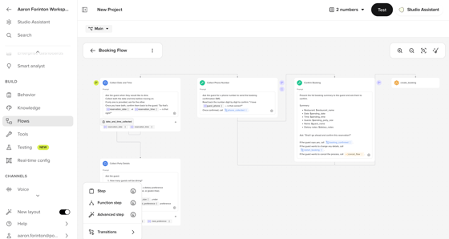
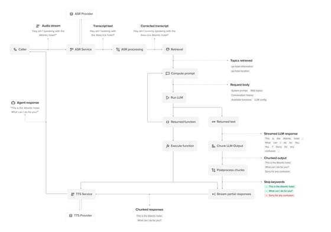

把电话那头的客服换成 AI，我试了一周 PolyAI
企业对话智能体赛道卷了好几年，PolyAI 是少有的把"无代码搭建"和"开发者工作流"都做顺的。一周上手体验聊聊真实感受。
最近被一个客户追问得有点烦——他的呼叫中心想把 IVR 语音菜单换掉，改成能真正听懂人话的 AI 客服。市面上套壳方案一抓一大把，但客户是银行，合规要求一箩筐，我不敢随便推。于是去PolyAI官网翻到，抱着试试看的心态注册了账号，拉了个 Sandbox 测试环境，折腾了一周。
说实话一开始我没抱太大预期。企业级 AI 产品嘛，界面一般都做得厚重，上手门槛高得离谱，文档还藏着掖着。但 PolyAI 打开 Studio 的第一眼让我有点意外——Flow 编辑器的画布很干净，左边是一排默认步骤，中间是连线画布，右边是每个节点的配置面板，整体布局跟 Figma 或者 Miro 这类协作工具的体验有点像，完全不是那种"为了企业而企业"的臃肿感。

无代码 Flow：产品经理的快乐星球
我第一个想验证的就是它号称的"无代码能不能搞定预订场景"。拉了个新 Flow 出来，加了五个 Collect Step 分别收人数、日期、时间、姓名、电话，每个 Step 指定好对应的实体类型——Date 实体真的能从"下周六晚上"这种模糊说法里解析出具体日期对象，这点比我之前玩过的几个竞品要准。然后加一个 Route Step 判断时间有没有空位，再接一个 Confirm Step 复述信息让用户确认，最后连到 End。整个过程鼠标拖一拖、填几个条件标签就完事了，一行 Python 没写。
最让我惊喜的不是 Flow 本身，而是 Flow 和普通 FAQ 话题之间的触发切换。我在 Sandbox 的 Webchat 里先问了"你们几点开门"，AI 正常答了营业时间，然后我顺势说"那帮我订一个周六晚上的位子"——Flow 自动触发了，从 FAQ 问答模式无缝切到多步对话模式，用户那边完全感受不到"模式切换"这回事。之前试过某些竞品，Flow 触发要靠特定关键词，或者触发了就卡死在 Flow 里退不出来，PolyAI 这块做得很丝滑。
ADK：终于有人把 Git 工作流带进 AI Agent 开发
第二天我切换到开发者视角，安装包从官方下载拿的，装了它的 ADK（Agent Development Kit）命令行工具。这东西是我觉得 PolyAI 最有差异化的地方——它把 Studio 里可视化配置的项目，完整拉成本地 YAML 和 Python 文件，你可以用 VS Code 或者 Cursor 打开，走标准的 Git 分支协作、PR、Code Review 流程。
实际跑了一遍七步工作流：init 关联项目 → pull 拉本地副本 → branch 开分支 → edit 改 YAML → validate 本地校验 → push 回远端 → review。validate 这步特别实用——我本地改了个 Edge 的条件标签拼错了，validate 直接报出来，不用等 push 上去被 Studio 拒绝。Python 转场函数也是在本地 IDE 里写，能跑完整的调试和依赖管理，比在 Studio 浏览器里那点可怜的代码编辑器舒服太多。

三种方式（Studio 可视化、Agent Builder AI 对话、ADK 命令行）共用同一份底层配置这件事也挺重要。我在 Studio 里搭好 Flow，ADK pull 下来就是完整的 YAML；我用 ADK 改完 push，Studio 界面实时刷新。团队里产品、运营、开发各用各的趁手工具，互相之间不打架，这点很多竞品都没做到——要么全靠可视化，开发者憋得慌；要么全靠代码，产品经理根本碰不了。
八大场景：从 FAQ 到故障排查的真实落地
去PolyAI文档翻了一下，能做的对话场景归成了八类：账户管理、身份验证、账单支付、预订预约、呼叫路由、故障排查、常见问题、订单管理。我重点看了故障排查那块——这是我觉得最能体现 PolyAI 功底的地方。
普通大模型做故障排查很容易"跟着客户跑"，客户说啥它接啥，排查步骤乱得一塌糊涂。PolyAI 用 Flow 机制把排查步骤精确编排成一条可审计的流程，每一步问什么、拿到什么信息之后走哪条分支、什么时候调用诊断工具、什么时候升级人工，全在画布上画得清清楚楚。文档里还提到故障排查通常在团队有了 2-3 个场景的上线经验后再推进，这点挺诚实——不像某些销售上来就说"我们什么都能做"。
适合谁、不适合谁
适合的团队：有真实呼叫中心或在线客服需求的企业，尤其是需要合规（PCI-DSS 支付场景）、需要和 CRM/支付网关/日历系统集成的。产品经理和运营能独立搭无代码 Flow，开发团队能用 ADK 走 Git 协作，两边不打架。八大场景里先上 FAQ + 呼叫路由最容易落地，见效快。
不适合的：纯粹想套个聊天机器人玩玩的小团队，或者对定制化要求极低的场景——套壳方案足够了，犯不上用 PolyAI 这么重的工具。另外 Sandbox 测试环境里某些高级功能（比如多语言路由）需要等审批才能开，这点对小团队来说可能有点慢。
一周下来最大的感受是：PolyAI 没在吹"通用大模型"那套，它就老老实实做"企业对话智能体"这一件事，无代码和开发者两套工作流都给你搭好了，选哪个顺手用哪个。真要把电话那头的客服换成 AI，这东西比我之前见过的方案靠谱得多。顺手说一句，这套使用心得的整理我同步了三份备份在GitHub、Gitee和GitCode，怕哪天某边挂了找不到。